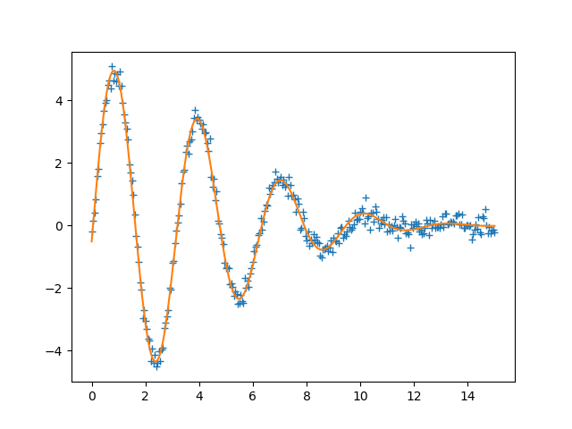

Note
Click here to download the full example code
doc_parameters_valuesdict.py¶
Out:
[[Fit Statistics]]
# fitting method = leastsq
# function evals = 63
# data points = 301
# variables = 4
chi-square = 10.9764657
reduced chi-square = 0.03695780
Akaike info crit = -988.718387
Bayesian info crit = -973.889945
[[Variables]]
amp: 4.96174550 +/- 0.03830181 (0.77%) (init = 10)
decay: 0.02571887 +/- 4.5357e-04 (1.76%) (init = 0.1)
shift: -0.09714733 +/- 0.00991436 (10.21%) (init = 0)
omega: 1.99750219 +/- 0.00321063 (0.16%) (init = 3)
[[Correlations]] (unreported correlations are < 0.100)
C(shift, omega) = -0.785
C(amp, decay) = 0.584
C(amp, shift) = -0.120
# <examples/doc_parameters_valuesdict.py>
import numpy as np
from lmfit import Minimizer, Parameters, report_fit
# create data to be fitted
x = np.linspace(0, 15, 301)
data = (5.0 * np.sin(2.0*x - 0.1) * np.exp(-x*x*0.025) +
np.random.normal(size=x.size, scale=0.2))
# define objective function: returns the array to be minimized
def fcn2min(params, x, data):
"""Model a decaying sine wave and subtract data."""
v = params.valuesdict()
model = v['amp'] * np.sin(x * v['omega'] + v['shift']) * np.exp(-x*x*v['decay'])
return model - data
# create a set of Parameters
params = Parameters()
params.add('amp', value=10, min=0)
params.add('decay', value=0.1)
params.add('shift', value=0.0, min=-np.pi/2., max=np.pi/2)
params.add('omega', value=3.0)
# do fit, here with the default leastsq algorithm
minner = Minimizer(fcn2min, params, fcn_args=(x, data))
result = minner.minimize()
# calculate final result
final = data + result.residual
# write error report
report_fit(result)
# try to plot results
try:
import matplotlib.pyplot as plt
plt.plot(x, data, 'k+')
plt.plot(x, final, 'r')
plt.show()
except ImportError:
pass
# <end of examples/doc_parameters_valuesdict.py>
Total running time of the script: ( 0 minutes 0.059 seconds)